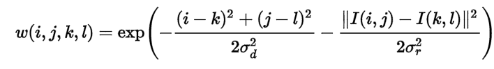
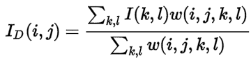
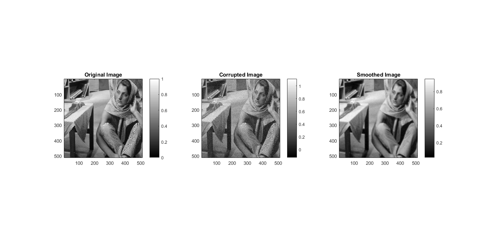
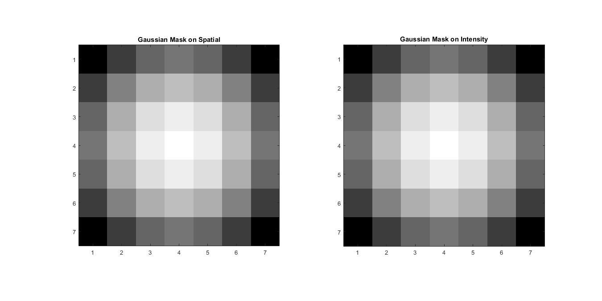

MyMainScript
Contents
Q2. Edge-preserving Smoothing using Bilateral Filtering
We take original Image , Then We will corrupt the Image with Gaussian Noise.
Then For Every Pixel we take Window of given window size.
We Calculate Spatial distance And Dissimilarity between intensities, Then calculate the weight of that specific pixel using this formula :

Then after computing weights we normalize them with following formula to get new intensity for Pixel.

Optimal Parameters Found :
- optimal RMSD = 0.0778
- sigma_space = 5
- sigma_intensity = 5
RMSD values for following Cases:
- 0.9*sigma_space and sigma_intensity = 0.0788
- 1.1*sigma_space and sigma_intensity = 0.0772
- sigma_space and 0.9*sigma_intensity = 0.0778
- sigma_space and 1.1*sigma_intensity = 0.0778
tic;
mat=load('../data/barbara.mat');
im=mat2gray(mat.imageOrig);
myBilateralFiltering(im,5,5,7);
toc;
RMSD VALUE :
0.0778
Elapsed time is 6.646216 seconds.
 